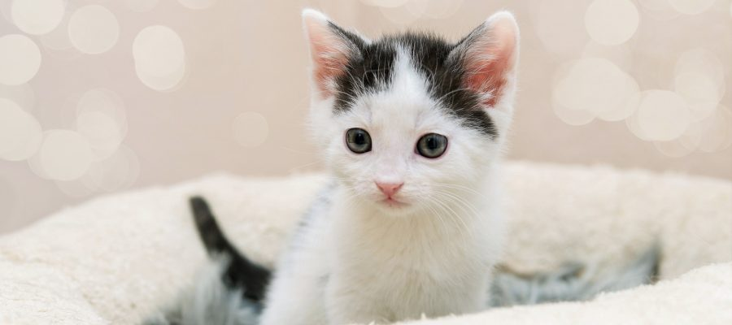
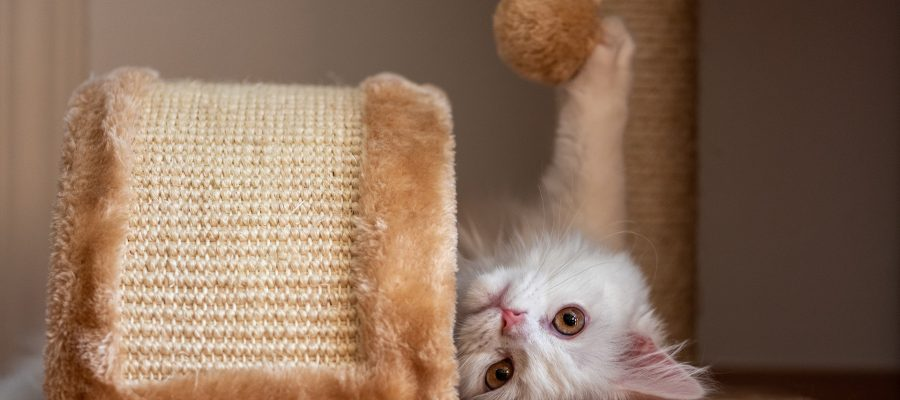

RiberaCat Propone Rebajar el IVA veterinario al 10%
RiberaCat asociacion para la defensa de los derechos de los animales ha perdido a todos los grupos parlamentarios que enmienden los Presupustos Generales del Estado para 2022, para incluir la rebaja del IVA a los servicios veterinarios al 10%

Cuales son los razas de gatos mas cariñosas
RiberaCat asociacion para la defensa de los derechos de los animales ha perdido a todos los grupos parlamentarios que enmienden los Presupustos Generales del Estado para 2022, para incluir la rebaja del IVA a los servicios veterinarios al 10%

Juguetes para gatos caseros que podemos hacer facilmente
RiberaCat asociacion para la defensa de los derechos de los animales ha perdido a todos los grupos parlamentarios que enmienden los Presupustos Generales del Estado para 2022, para incluir la rebaja del IVA a los servicios veterinarios al 10%